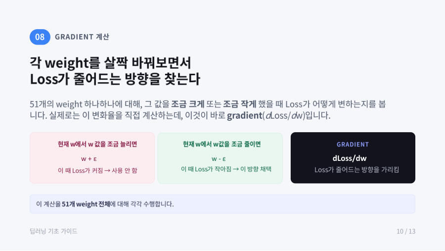

Gradient — loss가 줄어드는 방향 찾기 ★★
이제 weight를 어느 쪽으로 고칠지 정해야 해요. 방법은 이래요. weight 하나(예 w)를 조금 키워 봤더니 loss가 커지면 그 방향은 나쁜 방향이에요. 조금 줄여 봤더니 loss가 작아지면 그 방향이 좋은 방향이에요.

이 확인을 51개 weight 하나하나에 대해 해야 해요. weight 하나만 바뀌어도 예측값 ŷ이 바뀌고, 그러면 loss도 바뀌기 때문이에요.
그런데 실제로는 일일이 바꿔 보지 않아요. 수학으로 "w를 아주 조금 바꿀 때 loss가 얼마나 변하는가"(변화율)를 바로 계산해요. 이 값이 gradient(기울기)이고 dLoss/dw라고 써요. PyTorch의 autograd 기능이 이 계산을 대신해 줘요(다음 장들에서 배워요).
그림에서 loss는 밥그릇 모양이에요. 그릇 바닥이 loss가 가장 작은 자리예요. 점 A처럼 오른쪽 비탈에 있으면 기울기가 양수(+)이고, 바닥으로 가려면 w를 줄여야 해요. 점 B처럼 왼쪽 비탈에 있으면 기울기가 음수(−)이고 w를 늘려야 해요. 즉 기울기의 부호는 방향, 크기는 얼마나 가파른지(민감도)를 알려줘요.
안개 낀 산에서 가장 낮은 곳을 찾아간다고 해 봐요. 발밑이 어느 쪽으로 기울어 있는지 느끼고(gradient), 내리막 쪽으로 한 걸음 내딛어요(update). 이걸 반복하면 골짜기 바닥에 도착해요.
gradient(dLoss/dw)는 weight를 바꿀 때 loss가 변하는 정도로, loss가 줄어드는 방향을 알려준다. gradient가 양수면 weight를 줄이고 음수면 weight를 늘린다. 선택지에서 부호와 방향이 거꾸로 된 것은 오답이에요.
잠깐 확인 — 어떤 weight의 gradient가 −3입니다. weight를 늘려야 하나요, 줄여야 하나요?
늘려야 해요. gradient가 음수라는 것은 weight를 키우면 loss가 줄어든다는 뜻이에요.
화면을 가리고 "Gradient — loss가 줄어드는 방향 찾기 ★★"을(를) 친구에게 설명하듯 한 문장으로 말해 보세요. 막히면 위의 빨간 칸만 다시 보고 넘어가요.
자료: 4주차 · 딥러닝 모델 Training 과정.pdf, Week04 Autograd_Loss_Optimizer.ipynb · 빅데이터04(4주차) 녹취, 빅데이터03·07 녹취 일부